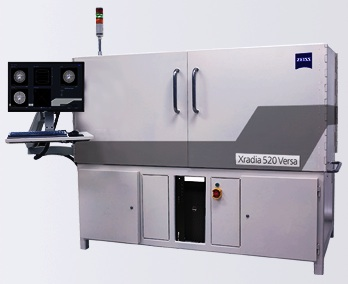

Tech Monthly- October 2014
Technical Feature
Leadless lead frame packaging for automotive and high-density requirements
by Lee Smith [United Test and Assembly Center (UTAC)]
Leadless lead frame based packages first saw broad adoption and industry infrastructure development with Fujitsu's introduction and licensing of its "bump chip carrier (BCC)" package in 1997 [1]. UTAC Thailand (previously NSEB) was an early licensee of the BCC technology. Over the past 17 years there have been continuous advancements in density, thickness, reliability and performance, which have resulted in leadless lead frame packages forecasted to be the largest package segment on a unit basis-approaching shipment levels of a billion per week for 2014 [2]. These leadless lead frame based packages may go by different suppliers' names, but the JEDEC designation of quad flat no lead (QFN) is the dominant package type and will be used generically in this article. The vast majority of QFN packages have a single row of perimeter pads limiting their application to low pin count devices - typically below 100...
READ FULL STORY
Industry News
IMAPS 2014 Explores the Future of Packaging
[Chip Scale Review staff]
The 47th annual IMAPS 2014 International Symposium on Microelectronics convened at the Town and Country Resort and Convention Center in San Diego, CA on October 13 - 16, 2014. The theme of the event this year was "Future of Packaging." Dr. Subramanian S. Iyer, IBM Fellow and IMAPS 2014 Technical Chair, commented, "With classical silicon scaling saturating, and the cost per transistor, in some estimates potentially increasing, keeping the expectations of Moore's 'law' going for another decade or two will depend on how we successfully scale packages and boards."
Town and Country Resort & Convention Center
This year's event was highlighted by five (5) keynote presentations by distinguished business leaders: Dr. Steve Bezuk of Qualcomm, Dr. Kamal Sikka of IBM, Dr. Franck Murray of IPDIA, Dr. Ilyas Mohammed of Jawbone, and Kunal Parekh of Micron. They were joined by Dr. Rao Tummala of Georgia Tech and Dr. Bharath Rangarajan of Advanced Nanotechnology Solutions for a stimulating panel discussion on the "Future of Packaging."
Keynote, Dr. Steve Bezuk of Qualcomm

Keynote - standing room only
The technical program featured 104 excellent presentations organized in six parallel tracks: (1) Future of Packaging, (2) Advanced Packaging Interconnect & Assembly, (3) Materials & Processes, (4) Modeling, Design & Test, (5) Interposers & 3D Packaging, and (6) 3D Embedding & Reliability. As anticipated, the most popular track appeared to be the one focused on interposers and 3D packaging.

Special demonstration by Carlsbad High School, FTC Robotics Team 6226 in exhibit hall

Thierry Lazerand, Plasma-Therm
lasma-Therm. The exhibition hall was "sold out" this year with 120 companies promoting their products and services, including Premier sponsors Natel, Heraeus, and Metalor. The majority of exhibitors surveyed indicated that it had been a good show for them with most of the booth traffic coming on the first day. Total attendance was up over last year's 2013 event however final figures have not been released yet.
In addition, there were six (6) Professional Development Courses offered on "Chip Packaging Processes and Materials", "Fundamentals of Microelectronics Packaging", "IC Fabrication and Electronic Packaging", "Interposers - Silicon, Organic and Glass", "Packaging and Testing of Implanted Medical Devices", and "Understanding the Common Failure Modes from a Physics of Failure Perspective."
Exhibitor Unisem Angela Lee & Michael Griffin

Exhibitor EPP GmbH Dayton Bishop & Heinrich Stenger

Exhibitor Azimuth Electronics

Exhibitor AMICRA Johann Weinhandler

IMAPS Executive Director, Michael O'Donoghue
The Call for Papers has already been issued for IMAPS 2015 which will be held October 27 - 29, 2015 in Orlando, Florida. Abstracts are due by March 27, 2015. For additional information www.imaps.org/imaps2015
A Message from the General Chair
IWLPC 2014 is shaping up to be the best year yet, and we invite you to join us!
Sharpen your grasp on emerging technology at this year's IWLPC. Join us in Silicon Valley to interact with leaders of MEMS, 3D and Wafer-Level Packaging. Keynote presenter, Janusz Bryzek, also known as father of sensor technology, will speak on "Living Connected Through Trillions of Sensors." Choose from two days of parallel technical sessions which explore key topics under the three tracks. Enrich your grasp on current development in plenary sessions on MEMS and WLP, as well as through a 3D panel discussion.
Throughout the conference, you will have opportunities to discuss growth possibilities in your industry with nearly sixty vendors of key materials, equipment and technology in the exhibit area. To close out the conference, industry experts will give detailed lectures in four professional development courses so you can dive a little deeper into specific areas of technology.
So whether you're looking for some inspiration about coming technologies, trying to learn more about leading-edge processes, or needing to find a solution to your most recent work challenge, chances are good that you'll benefit from IWLPC 2014. So come check us out in San Jose - you'll be glad you did.
Keith A. Cooper
SET North America
Conference General Chair
IWLPC - International Wafer-Level Packaging Conference
November 11-13, 2014
San Jose, CA
Tutorials | Thursday, November 13
T1 - Wafer Level Packaging for MEMS and Microsystems Challenges and Opportunities
The ability to package ICs at the wafer-level has been a major contributor to size and cost reduction over the last 10 years. Significant technical challenges had to be overcome to realize these advantages in a production environment. The wafer-level packaging of MEMS and Microsystems also has contributed to the size and cost reduction of those devices, but with greater technical challenges and with a greater reward for overcoming those challenges. This course will review the general requirements for packaging of a variety of MEMS and Microsystem devices and will present methods to meeting those requirements with wafer-level packaging technologies. While research efforts and scientific principles will be at the heart of the discussion, the focus will be on practical implementation of the wafer-level package technology. Case studies will be used to illustrate major concepts. Wafer-level packaged devices covered in the course will include physical sensors such as pressure and inertial sensors, optical sensors and cameras, switches and RF devices as well as fluidic and biomedical devices.
T2 - Wafer Level-Chip Scale Packaging (WL-CSP)
Wafer Level-Chip Scale Packaging (WL-CSP) has gained much success as a packaging form factor in the consumer arena in the past few years that it is almost considered as a "technology commodity." It has been driven by needs for cost reduction, size shrinkage, and enhanced performance. This course will provide an overview of the WL-CSP technology. The market drivers, benefits, and challenges facing industry-wide adoption will be discussed. The standard configurations will be reviewed in terms of their construction, manufacturing process, and published electrical and thermal performance, together with package and board level reliability.
T3 - 3D IC Integration and Packaging
3D IC packaging and 3D IC integration are different. In general, the TSV (through-silicon via) separates 3D IC packaging from 3D IC integration because the latter use TSVs, but 3D IC packaging does not. TSV is the heart of 3D IC integration. It provides the opportunity for the shortest chip-to-chip, and the smallest pad size and pitch of interconnects. The potential high volume manufacturing of 3D IC integration is: (1) memory-chip stacking, (2) wide I/O memory (or logic-on-logic), (3) wide I/O DRAM, wide I/O 2, HMC, and HBM, and (4) wide I/O interface (or 2.5D IC integration). In this presentation, the supply chains and the critical steps such as FEOL, MOL, BEOL, TSV, MEOL (middle-end-of-line), assembly, and test and their ownerships for high-volume manufacturing for those four groups of 3D IC integration will be discussed. The 3D IC packaging, which has been keeping 3D IC integration away from volume production, will be briefly mentioned first. Key enabling technologies such as TSV forming and filling, front and backside metallization, RDL, temporary bonding and de-bonding, and microbumping, assembly and reliability will be presented and discussed. All the materials are based on the papers and books published by the lecturer and others in the past three years.
T4 - Achieving High Reliability for Lead-Free Solder Joints - Materials Consideration
This course covers the detailed material considerations required for achieving high reliability for lead-free solder joints. The reliability discussed includes joint mechanical properties, development of type and extent of intermetallic compounds (IMC) under a variety of material combinations and aging conditions and how those IMCs affect the reliability. The failure modes, thermal cycling reliability, and fragility of solder joints as a function of material combination, thermal history, and stress history will be addressed in details, and novel alloys with reduced fragility will be presented. Electromigration and tin whisker will also be discussed. The emphasis of this course is placed on the understanding of how the various factors contributing to the failure modes, and how to select proper solder alloys and surface finishes for achieving high reliability. Also will be presented are the desirable future alloys and fluxes in order to meet the challenge of miniaturization.

ZEISS Offers New Autoloader for 3D X-ray Imaging
Extends Efficiency & Optimizes Use of Xradia Versa Platforms
Pleasanton, CA - September 3, 2014 - (Marketwired) - ZEISS announces automated sample handling for ZEISS Xradia Versa 3D X-ray microscopes (XRM) for submicron imaging. XRM Autoloader helps gain critical efficiency and maximizes utilization of Xradia Versa systems by reducing user-instrument interaction. Sample batches can be run throughout the workday, overnight, and even during typically under-used weekend time.
 Autoloader is flexible for handling diverse sample types in the same queue, offers workflow solutions for volume jobs, and also facilitates precise and repeatable sample measurements. It is especially valuable in industries where increased utilization can provide a positive impact on profitability. Users are able to set up queues of imaging jobs to maximize XRM usage, thus increasing effective throughput. As an additional convenience, users may receive automatic notification, including via their mobile devices if desired, of each successively completed scan.
In today's time-sensitive applications, users benefit from the ability to perform a single batch set-up and allow the system to run automatically, sometimes for days. At the same time, they need flexibility to interrupt one batch to run a higher priority job if needed. Early users of the new Autoloader have improved the efficiency of sample handling by 17-30%. On ZEISS Xradia 520 Versa, Autoloader enhances failure analysis in the semiconductor industry by facilitating the study of controlled collapse chip connections (C4), through silicon vias (TSV), micron-sized bump cracks, voids in substrates and a number of other issues. It also introduces efficiency in the oil and gas industry by setting a queue of up to 14 core plugs at one time.
"We're fortunate to work with the world's leaders in electronics manufacturing and the oil and gas industry," says Dr. Kevin Fahey, head of the ZEISS X-ray microscopy business. "To support their requirements to continually improve operational efficiency, we're committed to continue evolving the power of 3D X-ray microscopy. Innovations like Autoloader streamline processes and deliver higher ROI and efficiency across the widest possible range of industrial applications."
The optional ZEISS XRM Autoloader is available immediately. It integrates seamlessly with Scout-and-Scan user interface versions 10.6 and higher and is a field upgrade option for ZEISS Xradia Versa systems. Autoloader is supplied with fourteen sample holders, and customers are able to select from five different styles. Additionally, ZEISS offers an open design architecture for the sample holders that enables users to create custom designs for their unique applications. Total load capability of the Autoloader is 1.5Kg.